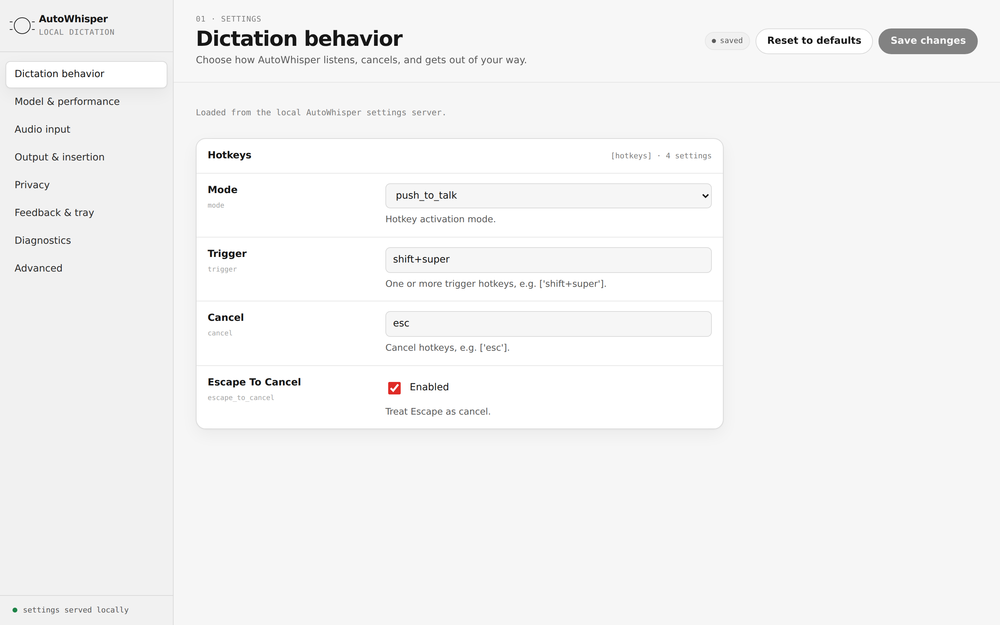
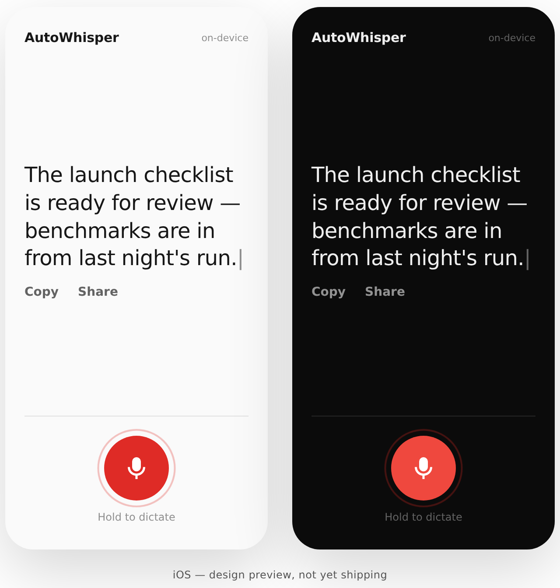
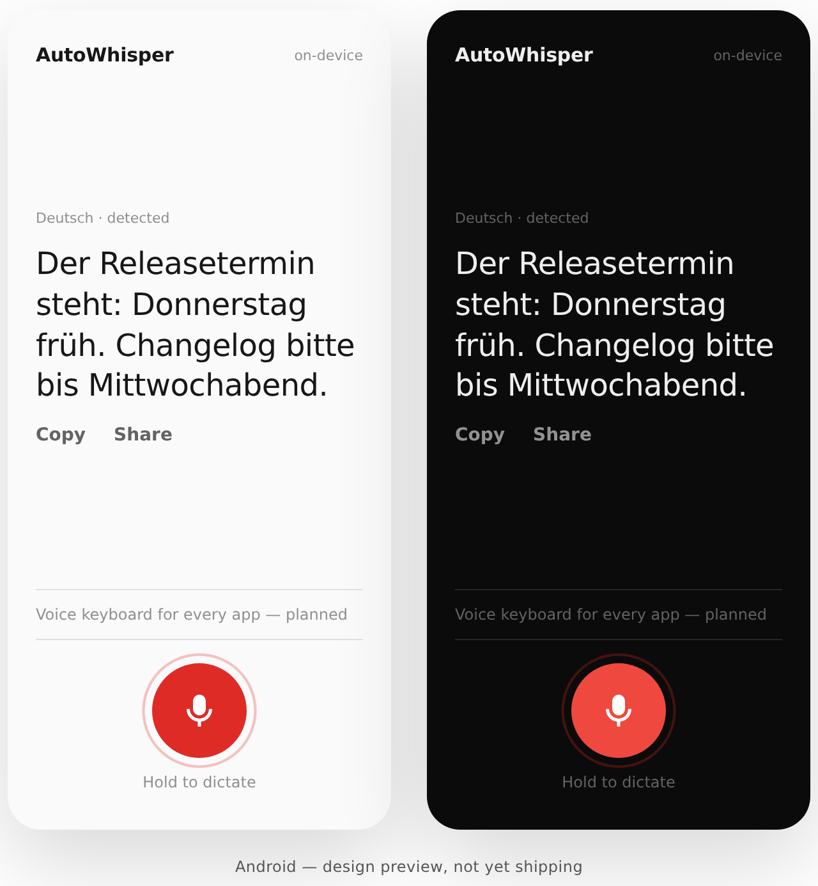
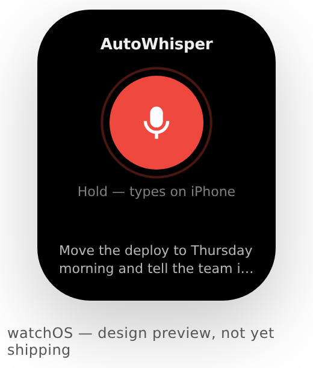

Speak.
It types.
Hold a key and talk. AutoWhisper turns speech into text at your cursor — offline, local-first, open source.
v0.7.1 · AutoWhisper-macOS-v0.7.1.zip · Notarized Developer ID

Real product UI — the settings app AutoWhisper serves locally.
Offline by design
Whisper models run on your hardware. Speech never leaves the machine.
Built for flow
Push to talk, release, keep working. Text lands wherever your cursor is.
Open source
Apache-2.0, native C++, auditable end to end on GitHub.
Mobile is next.
Design previews for iOS, Android, and watchOS — not yet shipping. The same rule everywhere: your voice is processed on your devices.



Linux, where it started.
sudo add-apt-repository ppa:primemanifold/autowhisper
sudo apt update
sudo apt install autowhisperYour microphone audio stays local.
Offline transcription, local configuration, transparent releases. Everything is at github.com/primemanifold/autowhisper.